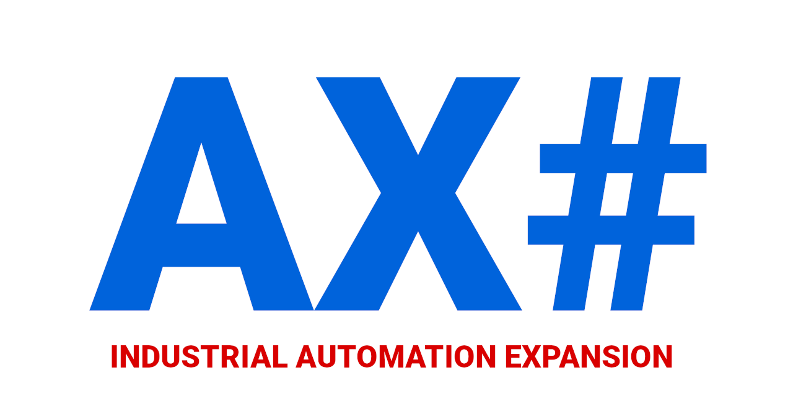

IX is an open-source project developed by a group of automation engineers. It provides easy access from .NET-based applications to SIMATIC-AX based PLC programs.
What's in
Ix.ixc compiler
Transpiles the structured text program data to .NET twin objects. These objects provide different methods of accessing the PLC data. Twin objects are suitable to use for HMI (with any .NET UI framework like WPF, Blazor, MAUI or WinForms). Twins implement value change notifications which makes it easy for the UI framework to react to changes in the PLC.
Mirroring the PLC program in a .NET object gives any solution consistency and scalability on a scale hard to achieve with traditional approaches.
Ix.Connectors
The connectors provide a communication layer for twin objects generated by the compiler (ixc).
Ix.Blazor
The presentations provide a mechanism for automated UI generation from PLC code. The UI layout and properties are malleable with the directives in the PLC code.
Prerequisites
Make sure you have installed both .NET6 and .NET7.
Getting started
Make sure you meet all prerequisites.
Add package source
To get early access to the packages from IX you will need to get access to a dedicated package feed hosted on GitHub. If you do not have a GitHub account please consider creating one by signing up at https://github.com.
dotnet nuget add source --username GITHUBUSERNAME --password PAT --store-password-in-clear-text --name gh-packages-ix-ax "https://nuget.pkg.github.com/ix-ax/index.json"
Replace GITHUBUSERNAME with your github name Replace PAT with your Personal Access Token (how to create your PAT)
Using templates
Install IX template package
When using .NET7
dotnet new install ix.templates
When using .NET6 and earlier
dotnet new --install ix.templates
Note
Make sure all nuget feed sources are available at the time of installation of packages.
If you are not sure run dotnet nuget list source and check that the sources listed are reachable.
The installation may fail if some of the source is not available.
List available templates
dotnet new list --tag ix
Template Name Short Name Language Tags
------------------------------ ---------- -------- -----------------
IX Blazor application ixblazor [C#] IX/Blazor
IX Simmple console application ixconsole [C#] IX/Console-Simple
IX twin project ixtwin [C#] IX/Twin Library
.
.
.
Create new project from template
dotnet new [shortname] -n YOUR_PROJECT_NAME
Prepare your PLC and AX project
Using TIA portal you need to enable WebAPI interface see here and here is a very informative youtube video.
Consult README.md file located in your new project for additionatl information.
From scratch
Install ixc IX compiler CLI
ixc is CLI implementation of IX Compiler.
Open the terminal in the directory of your AX project (the one where the apax.yml file lives), and run the following commands:
dotnet new tool-manifest
dotnet tool install --local Ix.ixc --prerelease
This will install the ixc compiler tool for your project.
Run ixc tool in your project directory
To run ixc do in your ax project directory:
dotnet ixc
ixc will create a new folder (defaults to ix in your ax project folder) where you can find the C# Twin project of your AX program.
The ixc help can be displayed running.
dotnet ixc --help
ixc 0.5.0-1.8+Branch.wip-webapiconnector-1.Sha.7b12285dc7e7aa72995e9e47bbcf7f4cf386f170
Copyright (C) 2022 author
-x, --source-project-folder Simatic-ax project folder
-o, --output-project-folder Output folder.
--help Display this help screen.
--version Display version information.
Before usage apax commanad ensure that you are logged in
apax login
Run apax install to install dependencies of your AX project
apax install
You will need to load your PLC with --default-server-interface in render your PLC program data accessible via WebAPI interface.
apax build
apax sld -t YOUR-SYSTEM-IP -i .\bin\1500\ --accept-security-disclaimer -r --default-server-interface
Connecting PLC.NET Twin to the PLC
using Ix.Connector;
using System;
using System.Collections.Generic;
using System.Linq;
using System.Text;
using System.Threading.Tasks;
using Ix.Connector.Sax.WebApi;
namespace your_project_name
{
public static class Entry
{
// Connecting to read PLC using WebAPI
public static my_plcTwinController Plc { get; } = new (ConnectorAdapterBuilder.Build().CreateWebApi("10.10.101.1", "Everybody", "", true));
// Connecting to dummy
public static my_plcTwinController PlcDummy { get; } = new (ConnectorAdapterBuilder.Build().CreateDummy());
}
}
Start PLC twin operations
// This start cyclical operation on PLCTwin at 10ms rate
your_project_name.Entry.Plc.Connector.BuildAndStart().ReadWriteCycleDelay = 10;